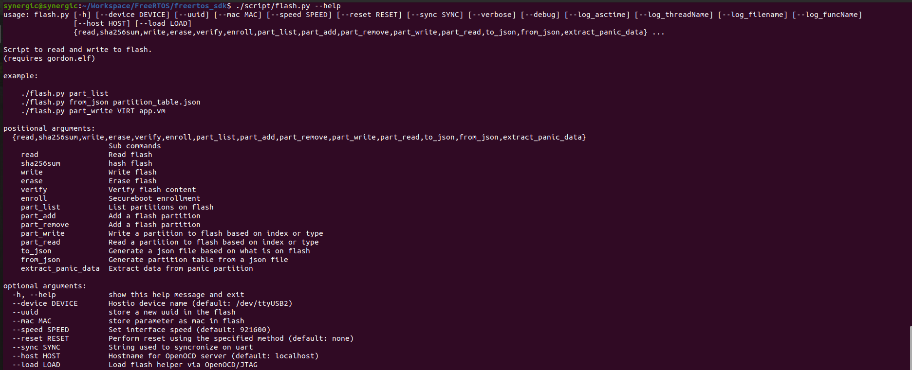
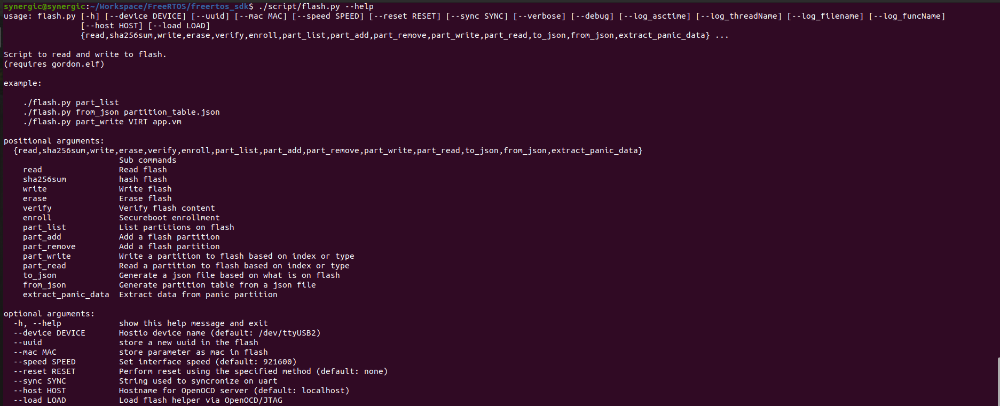

Development Environments
It is necessary to set-up the programming environment to ensure that all the required tools are set-up to successfully write the code, compile and run applications on Talaria TWO.
Linux
Eclipse Set-up for Linux
Application Development - Manual Procedure
This section describes the manual procedure for developing the application for InnoPhase IoT product using Eclipse IDE.
Import Talaria TWO Example Project
Procedure to import an example project remains the same as Import Talaria TWO Example Project for Eclipse plugin.
Configuring the Eclipse Project
Click on your project, right click and select Properties.

Figure 42: Select Properties
Select Settings under C/C++ build and click on Toolchains. Add the
tool chain path and build tools path through global, workspace and project links. Click Apply and Close.
Figure 43: Settings Window
Click on ARM Toolchains Path option available under MCU.
Click on xPack. and a window opens as shown in the picture below.
Select the version of the toolchain and click ‘OK’.
Click ‘Apply’.

Figure 44: Adding ARM Tool Chain Path
Click on Build Tools Path option available under MCU.
Click on xPack and a window opens as shown in the picture below.
Select the version of the buildtools and click OK.
Click Apply.

Figure 45: Adding Buildtools Path
Click on OpenOCD Path, provide the OpenOCD as the executable.
Click on xPack, select the version of OpenOCD and click OK.
Click on ‘Apply’ and then ‘Apply and Close’.
Figure 46: Adding OpenOCD Path
Includes directory of the project is added.

Figure 47: Includes directory of the project
Building Application in Eclipse
To build a project, click Project -> Build Project.
Figure 48: Building the Application
On successfully building the application, an out directory containing the .elf file is created inside the application.
Figure 49: Build console
Debug Configuration Set-up in Eclipse
To start debugging the application, select the project and right click on it. Choose Debug As -> Debug Configuration.
Figure 50: Debug configuration settings
Double click on GDB OpenOCD Debugging and the debug configuration of the project is seen. Select the configuration and then point to the generated ELF of the application present in the out directory.

Figure 51: GDB OpenOCD Debugging settings
Under Debugger Settings, select the executable path as an OpenOCD installed path by clicking on Browse.
Figure 52: Debugger settings – OpenOCD installed path
In Config options, enter the path of configuration files available in conf directory of the SDK. These two files contain the configuration settings of Talaria TWO EVB. Configuration path should be as follows:
-s C:/<PATH TO SDK>/sdk_x.y/conf -f ftdi.cfg -f t2.cfg |
|---|
Note: For SWD debugging, use the following configuration in Config options:
-s C:/<PATH TO SDK>/sdk_x.y/conf -f ftdi_swd.cfg -f t2_swd.cfg |
|---|
Figure 53: Debugger config window for SWD Configuration
In GDB client setup, Select the actual executable arm-none-eabi-gdb as shown in Figure 54. Add the following commands in commands tab:
set mem inaccessible-by-default off set substitute-path /tmp/build-2_gctshx/ “C:/data/” mem 0 0x40000 ro mem 0x40000 0xc0000 rw mem 0x100000 0x200000 ro mem 0xfc0000 0x1000000 rw mem 0x2000000 0x2100000 rw |
|---|
Figure 54: Debugger settings
Click on Apply.
Programming Talaria TWO EVB
Flash the ELF onto Talaria TWO using the Download tool. Point to the elf file and click on PROG Flash to flash the application.
Ensure that the output is as shown in Figure 56. If not, Click on Clear Flash on the Download Tool and program the elf onto Talaria TWO again.

Figure 56: Download Tool Console
Debugging in Eclipse
To debug the application the debugger provides control of program execution by setting breakpoints, suspending executed programs, stepping through the code and examining the contents of variables.
Click on Start-up tab and select the following options:
Initial Reset
Load symbols
Load executable
Debug in RAM
Click on Debug in the start-up tab

Figure 57: Debug start-up settings
On being prompted to switch to the Debug perspective, click Switch.

Figure 58: Confirm Perspective Switch
The Debug perspective appears with the application window open. Eclipse IDE re-positions into debug perspective.

Figure 59: Debug perspective
 Breakpoints can be set by double-clicking to
the left of the line number. The blue circle indicates ( ) that the
breakpoint is set. Similarly, multiple breakpoints can be added. To
start debugging, click on ( ).
Breakpoints can be set by double-clicking to
the left of the line number. The blue circle indicates ( ) that the
breakpoint is set. Similarly, multiple breakpoints can be added. To
start debugging, click on ( ).

Figure 60: Setting breakpoint
The execution will stop at the first breakpoint added to the c file. As shown in Figure 60, breakpoint is set at line 6.
To continue execution, click the Resume button ( ) on the toolbar of the Debug view. This will resume execution of the program and stop at the next breakpoint.
Step into and step over can also be used to continue execution of the next line.
While debugging the application, the application’s prints will be visible on Download Tool’s console window.

{kind=link}
{kind=link}
{kind=link}
{kind=link}
{kind=link}
{kind=link}
{kind=link}
{kind=link}
{kind=link}
Figure 61: Step run output in console
Environment Set-up for Linux
Procedure to build and debug an application on Eclipse IDE in Linux using Talaria TWO SDK.
Software Installation
Standalone Ubuntu 20.04
Windows Subsystem for Linux
Procedure for developing an application using Windows Subsystem for Linux and Talaria TWO SDK.